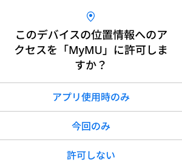
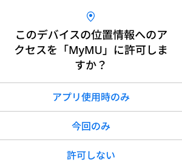

メッセージ画面例

環境センサーの初期化
- 初期化方法は「環境センサーの初期化方法」の画面で確認できます。

- 以下のメッセージが表示されたら「接続」をタップしてください。「キャンセル」をタップすると接続に失敗します。


-
しばらくすると位置情報の使用許可を求めるメッセージが表示されます。「1度だけ許可」「Appの使用中は許可」あるいは「アプリの使用時のみ」「今回のみ」をタップしてください。「許可しない」をタップすると接続に失敗します。
 

-
iOS搭載のスマートフォンでは、次のメッセージが表示されることがあります。その場合は「OK」をタップしてください。「OK」をタップしないと接続に失敗します。「許可しない」をタップした場合は、iOSのローカルネットワークの設定を変更してください。

- 接続に失敗した場合は次のメッセージが表示されます。「閉じる」をタップして最初からやり直してください。
おしらせ
オートメーション機能で位置情報を使用する場合は、位置情報の許可を求める画面で「Appの使用中は許可」「アプリの使用時のみ」をタップし、「正確な位置情報」を「オン」にしてください。オートメーション機能については取扱説明書をご確認ください。
SSID選択画面

暗号化キーを表示する

メッセージ画面例
- 「その他（手動設定）」を選択
- SSIDを入力し、「決定」をタップ

登録に失敗した場合
- 登録に失敗した場合は登録失敗のメッセージが表示されます。「閉じる」をタップすると対処方法を説明する画面が表示されます。
- 登録失敗のメッセージの「閉じる」をタップすると次の画面が表示されます。内容を確認して、再度登録手順を実施してください。「戻る」をタップすることで、接続手順の確認画面に戻ります。
別ユーザーに登録されている場合
-
環境センサーが別のユーザーに登録されている場合は次のメッセージが表示されます。「登録を続ける」をタップすることで、本環境センサーの登録が行われ、別のユーザーからは環境センサーの登録が削除されます。登録しない場合は「キャンセル」をタップします。